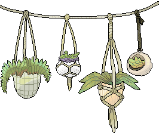
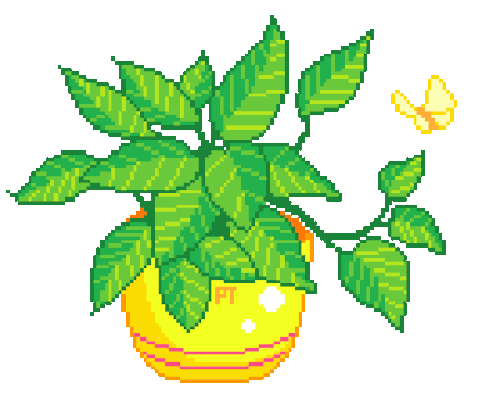

Transforming a broken cabinet into a plant house
I decided to turn an old cabinet into a plant house. First thing was to research a suitable plant.
Dracaena fragrans
A nice thing about Dracaena fragrans is that they can survive on low light and watering. making them a great choice as an indoor plant!
The next step is to fill the rest of the cabinet sections with more plants. Some choices are Dracaena trifasciata and Epipremnum aureum.
Finally and more importantly! I want to welcome Lilly, our new member of the house. 
This is a project i was planing to do since last December. I finally started on Jan 5, 2021. Transforimg a broken cabinet that was just wasting space. I wanted to use it in a way that gave it meaning.